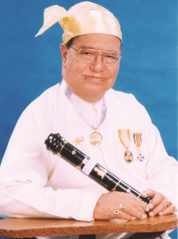
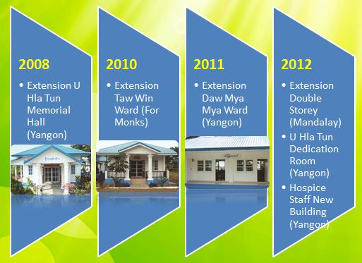
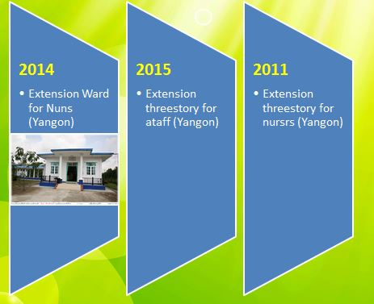
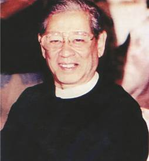
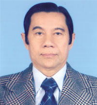
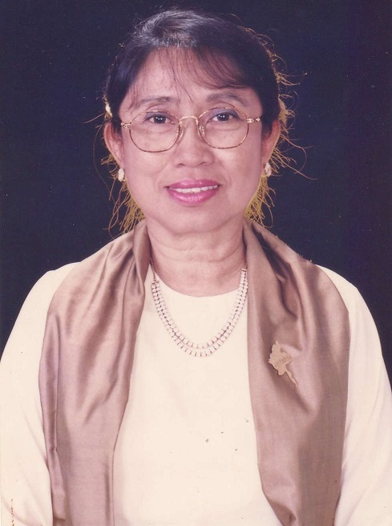

HISTORY
U Hla Tun
CPA, DHL, EPSF (Class I), EPFA (Class I)
Founder and Benefactor
U Hla Tun Hospice (Cancer) Foundation
1922-2006
Born in Mandalay on December 20th, 1922.
Third child of Construction Engineer (U Hla Pe
and Daw Saw). Matriculated in 1940 with
distinctions in mathematics and additional
mathematics from Saint Peter’s High
School, Mandalay. Mandalay College 1940-42,
Intermediate of Science (final) when the war
broke out. First places in academic and
athletic fields. Selected Soccer XI, Upper
Myanmar.
In 1948 trained with Allan Charlesworth
Company, the largest British firm of Chartered
Accountants since 1911. In 1952 took first
place at Registered Accountant Examination. In
1960 took over the English firm and renamed it
”U Hla Tun Group”, Certified
Public Accountants and Financial Consultants.
It is a large practice spreading over 50 years
to date, which include elite clients viz the
Union Bank of Burma, Government Boards/
Corporations, State Joint Venture
Corporations, Union of Myanmar Economic
Holding Large Banks, International Oil
Companies such as Total FinaElf, Premier
Petroleum, Petronas, Unocal, PTTEP, and Nippon
Oil.
A diplomat, 1983 to 1997, Honorary
Consul-General both the Kingdoms of Sweden and
Netherlands, awarded Knighthood by Queen
Beatrice of the Netherlands. In 1999 and 2001
Independence Day Honours List was awarded
medal for ”Excellent Performance in
Social Field (Class 1) and Excellent
Performance in the Field of Arts (Class
1)”.
In 1998 founded the U Hla Tun Hospice
(Cancer) Foundation, in memory of his only
daughter who passed away with Leukemia in the
United Kingdom. In Year 2000, Yangon Hospice
40 beds In-patient Centre was successfully
opened and in year 2003 Mandalay Hospice (a
replica of Yangon) 40 beds In-patient Centre
was opened. In 2006, November 26, he was
peacefully passed away with Heart and Kidney
failure at Shwegondine Specialist Centre,
Yangon.
Milestones of our Hospices




David O. Abel
Former Chairman(2006,Nov -> 2019,Jan)
(Minister / Brigadier General, Retired)
The Republic of The Union of Myanmar
David O Abel is the 4th sibling of 12
children. His father Mr. Alfred T Abel was an
engineer in the Burma Railways and his mother
Daw Chai a senior school teacher. The roots of
family are of Pyin-Oo-Lwin (Maymyo), than the
Northern Shan State. He was born in 1935 at
Insein as his father was stationed there.
During the Secon Second World War the family
return to their native town Maymyo. He was
educated in the Catholic Missionary School,
Saint Albert’s in Maymyo and
matriculated in 1951. He attended the Mandalay
College to study Medicine for (2) years. Due
to the internal insurgency he had to leave the
College. He was selected to attend the Royal
Military Academy, Sand Hurst in the United
Kingdom from 1953 to 1956 and graduated in
Economics. He served in the Myanmar Army in
various positions and retired from the Army
with the rank of Brigadier General holding the
post of Director General of Procurement until
1991. He also served in the Civil
Administration in various Government
Departments. He was appointed to serve as
Minister of Commerce, Minister of Finance and
Revenue, Minister of National Planning and
Economic Development and Minister at the
Chairman’s affair of the State Peace and
Development Council. He retired in 2003.
During his cabinet positions he founded the
Union of Myanmar Economic Holdings, and (12)
Joint Venture Companies. He served as Chairman
of the Myanmar Investment Commission until
1997.
For his outstanding services both in the
Armed Forces and the Civil Administration
Sector he was awarded seventeen decorations.
His association with the Founder and Patron of
Hospice Myanmar dates back to 1951. They were
very close friends and worked very closely.
This bond of friendship lasted for over 40
years, until U Hla Tun passed away. He married
Majr Daw Khin Thein Mu, in 1970. They have no
children.
This Forward is a message of Tribute to the
Late U Hla Tun, CPA, DHL, EPSF (Class 1),
Founder of Hospices in Myanmar. He was a Grand
– old – man, loved and respected
by whoever came in contact with him. He was a
Philanthropist who strongly believed in caring
and sharing with humanity. His philosophy was
that “Life is a Journey of
Humanity” and he stood – up for
the poor irrespective of race or religion.
Today we have two Palliative Care Hospice
Centers, one at Yangon and the other at
Mandalay. Both can cater for fifty patients
who are looked after with love and tenderness,
when they finally fade away, they fade away
with dignity and respect.
This endowment we carry on with dedication and
undeterred love.
Our memory is always kept alive by the very
remembrance of the “Grand – old
– man”
U Hla Tun. He shall always be remembered and
respected.
Chairman
Brigadier General David. O. Abel
(Retd.)

Prof. Dr. Myo Nyunt
Current Chairman(2019,Jan -> To Date)
M.B.B.S, D.Path (Ygn),
D.C.P (Lond) M.Phil (Lond)
F.A.C.T.M (Aust) Ph.D
I have the honour of knowing Sayagyi U Hla Tun when his only daughter Daw Mya Sandar Tun came to me for haematological investigation and was diagnosed as a case of leukaemia. Sayagyi did everthing he possibly could to save her life including bone marrow transplant in United Kingdom. Unfortunately we lost her.Sayagyi was very much saddened but with his unwaivering determination he managed to overcome his grief and established the U Hla Tun Hospice (Cancer) Foundation.
Since the very beginning of this project we went to see the poorest of the poor cancer patients wherever they may be. I had the privilege to see them together with Sayagyi amounting to two thousand four hundred visits before the in-patient care centre was officially opened on 2nd September 2000 in Yangon Subsequently another Hospice was opened in Mandalay on 15th August 2003.Now we are trying to cater for these patients including extended palliative treatment. I am also trying very best to see that this noble work is carried on with dedication and enthusiasm, now under the guidance of D.O.Abel (Brig.Gen.Retd) All of us are working towards the best possible end of life care for every patient who are the focus of heart of end of-life care. My grateful thanks goes to all those who have contributed their energy, commitment loyalty and support.
Prof.Dr.Myo Nyunt
Chairman
M.B.B.S, D.Path (Ygn),
D.C.P (Lond.) M.Phil (Lond.)
F.A.C.T.M (Aust.) Ph.D

Daw Yi Yi Myint
VICE CHAIRMAN
B. Com (Hons),
MBA (Stanford, U.S.A)
မြန်မာ့ပထမဆုံး Hospice
သိပ်မကြာသေးတဲ့ (၆.၇.၁၉) စနေနေ့မှာ အစည်းအဝေးတက်ရောက်ဖို့ ကားနဲ့တစ်နာရီနီးပါး သွားရတဲ့ “ ဦးလှထွန်း Hospice (Cancer) ဖောင်ဒေးရှင်း” ကိုရောက်ခဲ့ပါတယ်။ ဧည့်ခန်းထဲရောက်လိုက်တာနဲ့ ခါတိုင်းတွေ့မြဲဖြစ်တဲ့ ကွယ်လွန်သူ ဂရုဏာရှင် တည်ထောင်သူဦးလှထွန်းရဲ့ ဓါတ်ပုံကြီးအပြင် ဆရာကြီးဦးလှထွန်းနဲ့ထပ်တူထပ်မျှ ဦးလှထွန်းကင်ဆာဖောင်ဒေးရှင်းကြီးကို ခိုင်ခိုင်မြဲမြဲ ထိန်းသိမ်းဦးဆောင်ခဲ့တဲ့ ဗိုလ်ချုပ်ဧဘယ်လ် လတ်တလောကွယ်လွန်သွားခဲ့ပြီး ယခုချိတ်ဆွဲထားတဲ့ ဓါတ်ပုံကိုမြင်လိုက်ရတော့ တကယ်ပဲ ဦးလှထွန်းကိုယ်စားဖြစ်ခဲ့သူပါမရှိတော့တဲ့ အခြေအနေကို လေးလေးနက်နက် ခံစားစဉ်းစားစရာတွေ ပေါ်ပေါက်လာပါတယ်။
ဒီနေရာမှာ အထူးသဖြင့် ဆက်ပြီးအစည်းအဝေးကိုရောက်လာကြတဲ့ ကိုယ်စားပြုကြရမယ့်သူတွေဟာ ကိုယ့်အသက် (၈၀) ကျော်ထက်ကြီးတဲ့ ဦးလှထွန်းရဲ့တွဲဖက် ကျန်ရှိခဲ့တဲ့ မိတ်ဆွေကြီးတွေဖြစ်ပါတယ်။ ဦးလှထွန်းရဲ့လက်ရွေးစဉ်တွေရှိနေကြသေးတဲ့ တစ်ချို့ပါပဲ။ ဆရာကြီးရဲ့လုပ်ရည်ကိုင်ရည်နဲ့ တိုင်းဆမမှီနိုင်တဲ့ မေတ္တာရှင်ရဲ့ Hospiceကို နိုင်သလောက်လက်တွဲခဲ့ကြတယ်။ ဆက်ပြီးလည်း သွားကြမယ့်သူတွေပါ။ Next Generation အဖြစ် ဆွေးမျိုးရော ဆွေမျိုးမဟုတ်တဲ့တာဝန်ကို ဆက်ယူရမယ့်သူတွေကို ရည်စူးပြီး ကိုယ်တိုင်သိထားမှတ်ထားဒါလေးတွေ တင်ပြချင်ပါတယ်။ Hospice ဆိုတဲ့ဝေါဟာရကို တိတိကျကျသိနိုင်ဖို့ အဓိပ္ပါယ်ကိုရှာမယ်ဆိုရင် ထင်သလောက်မလွယ်ပါဘူး။ အဘဓာန်အချို့မှာတောင် မပါပါဘူး။ အချို့ကို တင်ပြပါ့မယ်။
(၁)Hospice – Traveler’ house of nest by religious order
Collins Current English Dictionary
(၂) Hospice – House of nest or travelers especially kept by religious order, Home for the destitute
Oxford Dictionary
(၃) ခရီးသည်များတည်းခိုရန်ဂေဟာ – ဇရပ်၊ နာမကျန်းသူဆင်းရဲသူများအတွက် ဂေဟာ၊ မေတ္တာရိပ်မွန်၊ သေနေ့စောင့်နေသူများအတွက် ဂရုဏာဂေဟာ။
ျမန္မာအဘိဓာန္
နိဂုံးချုပ်အနေနဲ့ ဖြည့်ပြောရမယ်ဆိုရင်တော့ မြန်မာ Hospice က မေတ္တာ၊ ဂရုဏာတွေနဲ့ စရိတ်စကမရှိ စောင့်ရှောက်သွားတဲ့ ဘာသာရေးအဖွဲ့အစည်း မဟုတ်တဲ့ မေတ္တာဂေဟာပါ။ ဂရုဏာနဲ့မှ ပေါ်ပေါက်တာပါ။ Palliative care ဆိုတာကတော့ ဘဝရဲ့နောက်ဆုံးအချိန်မှာ ခံစားမှုဝေဒနာကို ဂရုဏာ၊ ကြင်နာမှုပေးတာပါ။
အင်္ဂလိပ်စာဘာသာပြန်တွေမှာ Hospice ရဲ့အစကို ရေခဲတောင်ပေါ်က ခရီးသည်တွေကို ဘာသာရေးရိပ်သာများက ပြုစုစောင့်ရှောက်ပေးခဲ့တဲ့ အတွေ့အကြုံများက ဖြစ်ပေါ်လာခဲ့တဲ့အတွက် ဖြစ်ပေါ်လာခဲ့အတွက် ရေခဲတောင်ပေါ်ခရီးသည်များကို ဘာသာရေးရိပ်သာများက စခဲ့တဲ့အတွက် အဲဒီကိစ္စက အဓိကဖြစ်ခဲ့ပါတယ်။
ဆရာကြီးဦးလှထွန်းရဲ့ မြန်မာ Hospiceကတော့ ဘဝခရီးရဲ့နောက်ဆုံးအချိန်ရောက်ကြတဲ့ ကင်ဆာရောဂါသည်များကို Hospice မှာသော်လည်းကောင်း၊ အိမ်သို့ပြန်ခေါင်းချချင်ရင်လည်း ရောက်တဲ့အထိ တာဝန်ယူစောင့်ရှောက်ပါတယ်။ အနားမှာ မိသားစုအစောင့်နဲ့ နေချင်တယ်ဆိုလည်းရပါတယ်။ နေ့ရက်ကန့်သတ်ချက်မရှိ၊ စရိတ်ပေးဖို့မလို၊ ဘာသာရေးကန့်သတ်ချက်မရှိ မိမိတို့ရဲ့အဆုံးကို ငြိမ်းအေးစွာ သွားလို့ရပါတယ်။
ဘာသာရေး၊ ဘဏ္ဍာရေး၊ မိသားစုပါခွင့်ကိုပါ ကန့်သတ်ချက်မရှိတဲ့ မြန်မာ Hospice ပုံရိပ်ဟာ စီမံခန့်ခွဲမှုရှုဒေါင့်ကကြည့်ရင်တော့ တော်တော်ကြီးဂရုဏာ၊ စေတနာ၊ မေတ္တာတွင်မက ညှိနှိုင်းပေါင်းစပ်ယူရတာများပါတယ်။ ဒီဟာကိုသက်ဝင်နားလည်တဲ့ ဆရာကြီးဟာ ပထမဆုံးထူထောင်ခဲ့တဲ့မြန်မာအတွက် Hospice ကို သူချစ်တဲ့ခငိတဲ့လေးစားတဲ့မိတ်ဆွေ၊ ဆွေမျိုးတွေရယ်၊ လက်ရွေးစဉ်တပည့်ကျော်ကြီးကို ဖိတ်ခေါ်လက်ကမ်းပြီးလုပ်ခဲ့တာ အခုဆိုနှစ်ပေါင်း(၂၀) ကျော်ခဲ့ပါပြီ။ ဒါအပြင် သတိထားမိတာကကတော့ မူလလက်တွဲခဲ့ကြသူများရဲ့ အချိန်ဟာလဲများများမကြာတော့ဟု ဆိုနိုင်ပါတယ်။
ရှိနေသေးတဲ့သူတွေရယ်၊ ပါဝင်လာတဲ့ဆရာကြီးရဲ့တပည့်များနဲ့ ဆရာကြီးရဲ့ဆွေမျိုး၊ မိသားစုတွေရယ် ပိုမိုစိုက်ထုတ်အင်အားတွေနဲ့ ဘဝခရီးဧည့်သည်၊ ဒုက္ခသည်တွေရဲ့ ခိုကိုးရာကို ကောင်းသထက်ကောင်းအောင် လုပ်ကြပါစို့လို့ ဆုတောင်းမေတ္တာ ပို့ပါတယ်။